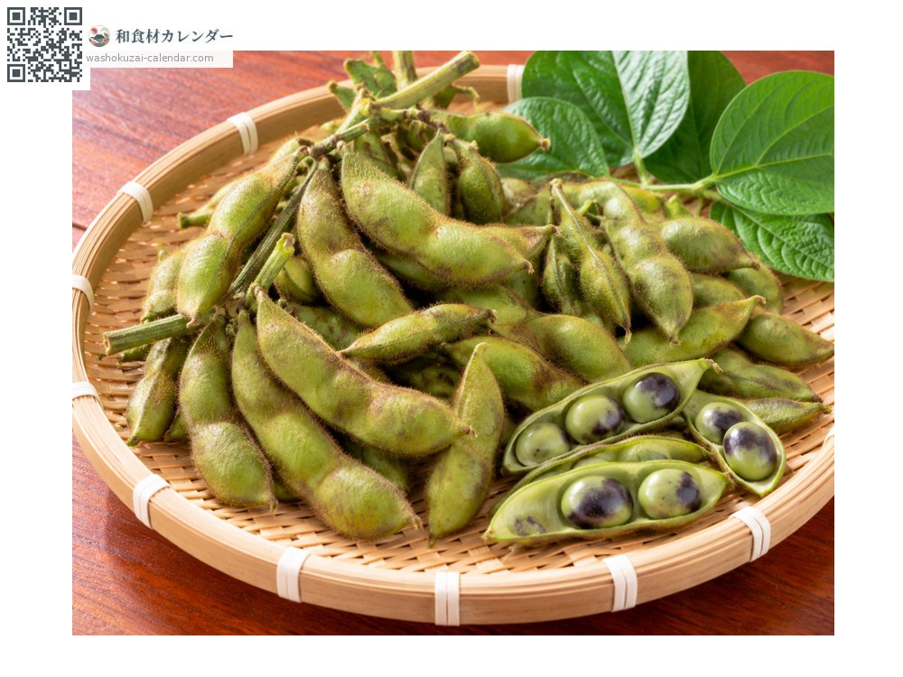
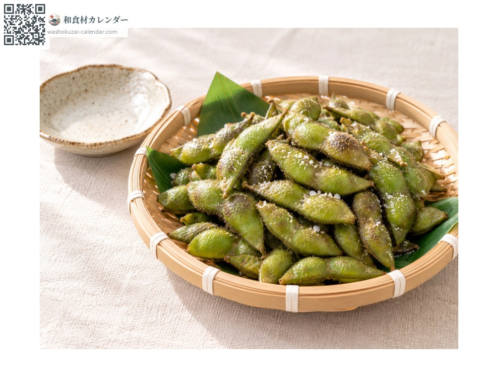
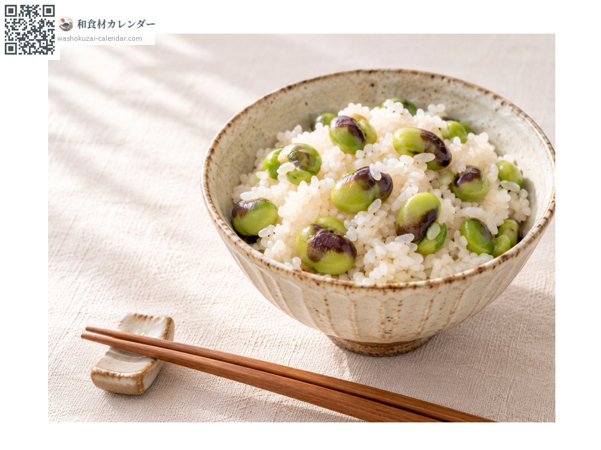
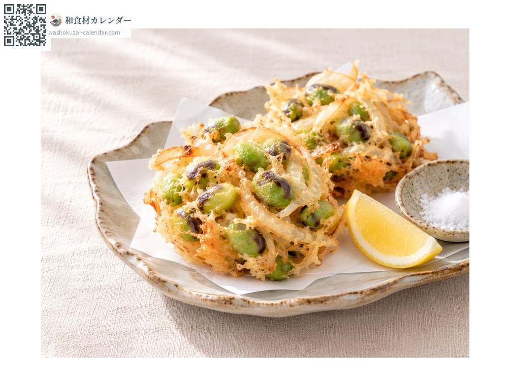
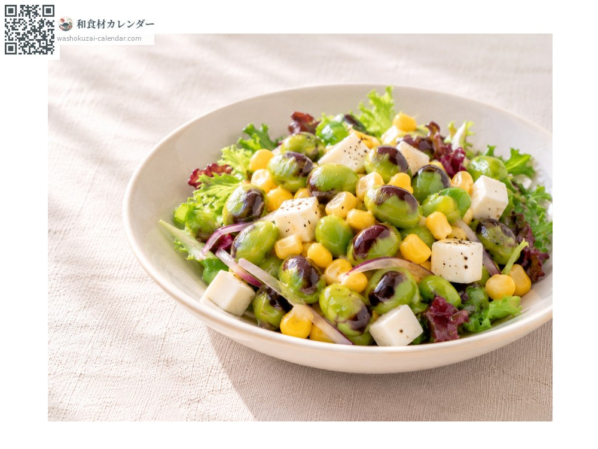

Black soybean edamame
黒枝豆 くろえだまめ kuroedamame
Also known askuroedamame, edamame
At its best in Oct

When it is at its best
In seasonAvailable
How to cook

Salt-boiled
Rubbed with salt, then boiled; sweeter and richer than ordinary edamame.

Mixed rice
Boiled, shelled and mixed into freshly cooked rice.

Kakiage
Shelled beans fried in batter with onion.

Salad
Shelled beans with cheese and sweetcorn.
How to choose
Plump pods, most holding three beans. On the stalk, the leaves and pods should not be wilted.
Storage
It loses freshness quickly, so boil it on the day you buy it. Boiled pods freeze well.
Main areas
Good to know
The young pods of the black soybean used for New Year sweet beans, picked before they ripen. The best-known variety is Tanbaguro, from the Tanba area spanning Hyogo and Kyoto. It is on sale for only two or three weeks in October. The later it is picked, the darker the bean skins become.